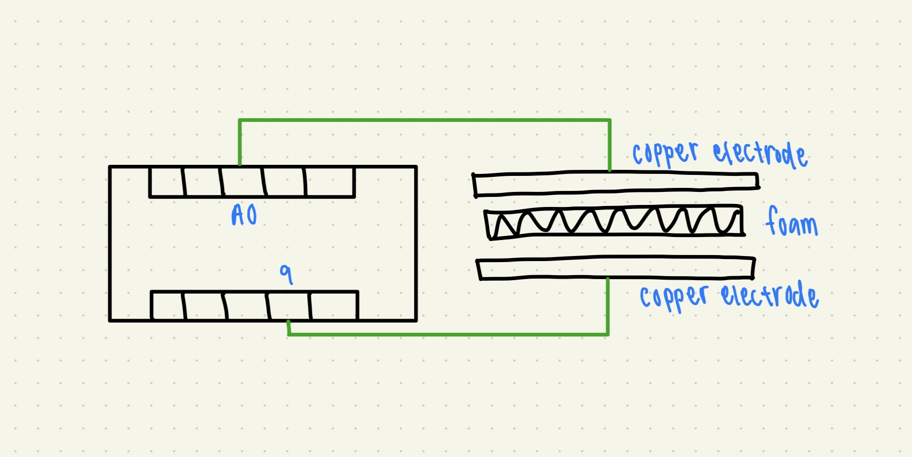

<h1 style= "text-align: center;">
Week 6: Electronic Input Devices </b></h1>
This week's assignment is to (1) make a capacitive sensor (2) configure and use another sensor (3) include schematics of each sensor (4) calibrate each sensor and (5) prepare CAD files for CNC week.
<h2 style= "text-align: center;">
Part 1: Making a Capacitive Sensor </b></h2>
For my capacitive sensor, I was inspired by Kassia's lab. I really liked the idea of making a "scale" with the copper sheets and a foam pad.
Here's a list of the materials I used:
<ul>
<li>Copper sheets</li>
<li>Foam pad</li>
<li>Alligator clips and wires</li>
<li>Arduino board</li>
</ul>
My set-up ended up looking something like this (here's a picture of my setup and the schematics):
<div class="image-container" style="margin-bottom: 20px; ; text-align: center;">

</div>
In order to calibrate my sensor, I used a cup of water that had markings at every fluid oz. I started with putting an empty cup on my sensor, then I went up 2 ounces per weight in until I reached 8 ounces.
Here's the code that I used in Arduino (this was taken from code given on the PS70 website):
<pre>
<code class="arduino">
long result;
int analog_pin = A0;
int tx_pin = 9;
void setup() {
pinMode(tx_pin, OUTPUT);
Serial.begin(9600);
}
void loop() {
result = tx_rx();
Serial.println(result);
}
long tx_rx(){
int read_high;
int read_low;
int diff;
long int sum;
int N_samples = 100;
sum = 0;
for (int i = 0; i < N_samples; i++){
digitalWrite(tx_pin,HIGH);
read_high = analogRead(analog_pin);
delayMicroseconds(100);
digitalWrite(tx_pin,LOW);
read_low = analogRead(analog_pin);
diff = read_high - read_low;
sum += diff;
}
return sum;
}
</code>
</pre>
Here's a graph of my values from the serial plotter, plotted in Desmos with a line of best fit that's hand drawn in.
<div class="image-container" style="margin-bottom: 20px; ; text-align: center;">
</div>
As you can see, the data points taper off significantly and it's not a linear relationship. The line of best fit becomes practically flat when there's 8 ounces of water on it. There wasn't a huge jump from 6 ounces to 8 ounces.
<h2 style= "text-align: center;">
Part 2: Light-Controlled LED using a Photoresistor </b></h2>
For the second part of this week's assignment, I decided to use a photoresistor and create a circuit where an LED's brightness adjusts according to the amount of ambient light. The goal is as the ambient light decreases, the LED's brightness increases, and vice versa.
Here's a list of the materials I used:
<ul>
<li>LED light</li>
<li>Photoresistor</li>
<li>1k and 10k resistor</li>
<li>Wires</li>
<li>Arduino board</li>
</ul>
Here is a schematic of my circuits:
<div class="image-container" style="margin-bottom: 20px; ; text-align: center;">
</div>
Here is the code that I used (after becoming more comfortable coding in Arduino, I coded this myself -- unlike the first part of this week's project!):
<pre>
<code class="arduino">
const int ldrPin = A0;
const int ledPin = 9;
int lastPressed = 0;
void setup() {
pinMode(ldrPin, INPUT);
pinMode(ledPin, OUTPUT);
Serial.begin(9600); // Initialize serial communication at 9600 baud
}
void loop() {
if(lastPressed + 100 <= millis()) {
lastPressed = millis();
int ldrValue = analogRead(ldrPin);
// Print LDR reading to Serial Monitor
Serial.println(ldrValue);
int ledBrightness = map(ldrValue, 0, 1023, 255, 0);
analogWrite(ledPin, ledBrightness);
}
}
</code>
</pre>
I used the different brightness settings on the iPhone flashlight to calibrate my sensor and it worked surprisingly well. The first point on the graph is me putting a finger on top of the photoresistor. There also seems to be a non-linear relationship between the readings and increasing the input by one setting. It seems to taper off and flatten out as the lights were brighter. Here is a graph of my findings with a hand-drawn line of best fit:
<div class="image-container" style="margin-bottom: 20px; ; text-align: center;">
</div>
I was really proud of the fact that my circuit actually worked so here's a gif of it in action!
<img src="light.gif" width="400" height="600">
<h2 style= "text-align: center;">
Part 3: CAD files for CNC Week </b></h2>
This is a work in progress... However, I plan to make a sign that says "Phoenicians" on it.